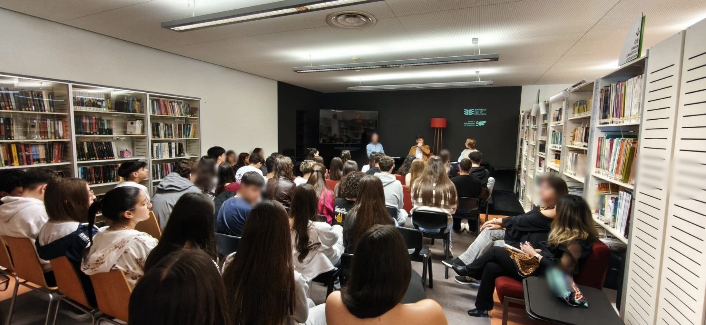

374participar
A Biblioteca acontece todos os dias.
Projetos, concursos, exposições e desafios que podes viver ao longo do ano letivo, dentro e fora da Biblioteca.
A Biblioteca em ação
O que está a acontecer, o que acabou de acontecer e o que vem a seguir.
O ano letivo da Biblioteca
Projetos da Biblioteca
O trabalho que atravessa o ano inteiro, e quem participa em cada um.
Projeto financiado pela RBE · 2026 a 2028
Palavras em Ação · Ler com a Biblioteca
A Biblioteca foi escolhida entre dezasseis projetos a nível nacional. Sequências de leitura, roteiros literários e leituras em família, com vinte turmas envolvidas até 2028.
Exposições
O que esteve e o que vai estar exposto na Biblioteca.
Concursos e iniciativas
O que está aberto, o que vem aí e o que já fechou.
Iniciativas nacionais
Os nossos alunos criaram
Vídeos, podcasts, booktrailers e trabalhos feitos na Biblioteca.
Novidades
O que já aconteceu: notícias, resultados e recapitulações das atividades.
Arquivo
O que ficou de cada ano letivo.
Segue a Biblioteca
Acompanha o dia a dia e recebe as novidades.
Novidades por email
Recebe as novidades da Biblioteca no teu correio eletrónico.